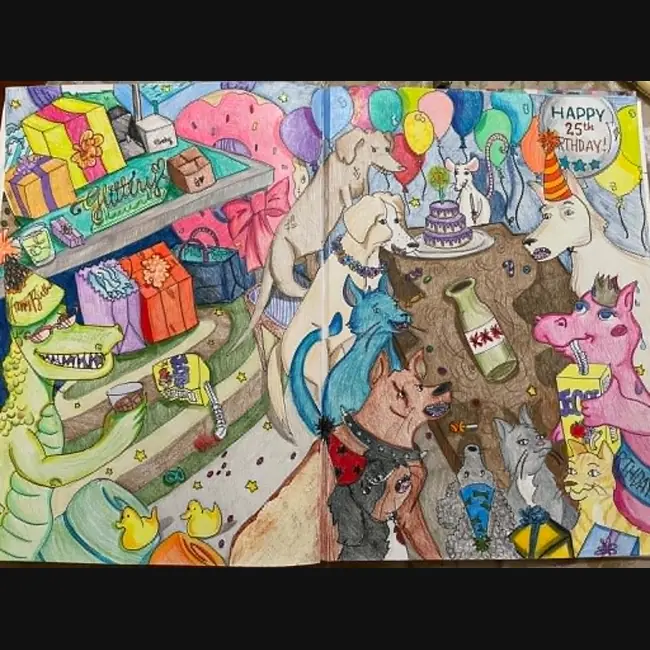
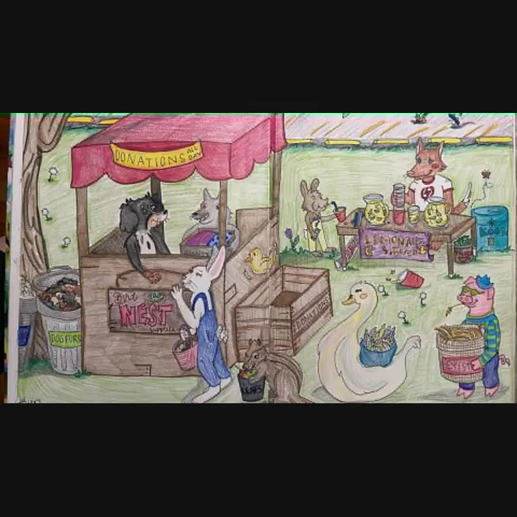
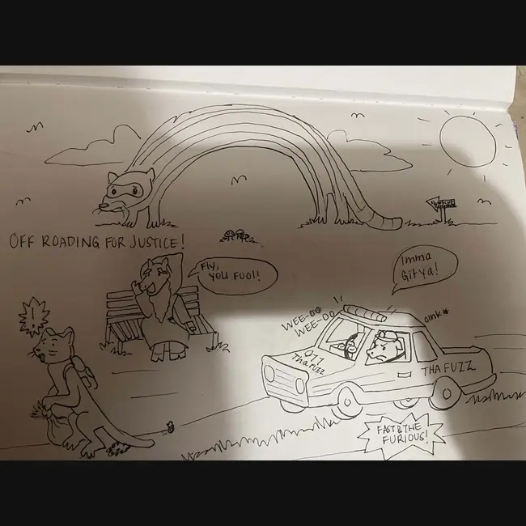

Send the messy idea
Creature, pet, cartoon memory, phrase, joke, sketch, object, or “I don’t know but it feels like this.” That counts.
Cartoon tattoo work • custom illustration • creature-heavy storytelling
Britni Rosa creates expressive, character-driven tattoo art and illustrations out of Flint, Michigan: strange animals, soft chaos, handmade humor, personal flash, and little worlds that feel alive before they ever become permanent.



Britni Rosa
Britni’s work lives between sketchbook intimacy and professional tattoo design. Her drawings use cartoon language to make emotion readable: creature faces, odd little scenes, family jokes, pets, fantasy bits, and characters that feel like they wandered out of a half-remembered childhood cartoon with better linework.
Gallery
Flash direction
The gallery points toward a strong flash lane: worms, dogs, birds, cats, bats, ducks, raccoons, little booths, charity stands, food signs, party scenes, rainbows, and strange community moments. The work is personal, readable, and collectible. That is the whole trick, somehow missed by several billion generic tattoo pages.
Tattoo info
Creature, pet, cartoon memory, phrase, joke, sketch, object, or “I don’t know but it feels like this.” That counts.
She turns it into a readable tattoo concept with character, placement awareness, and clean cartoon structure.
The final piece should feel personal without becoming cluttered, because skin is not a junk drawer with nerve endings.
Booking
For custom tattoos, send the concept, size, placement, reference images, and your preferred timeline. Unsure is fine. Half-formed is fine. “Tiny raccoon with emotional baggage” is basically a complete brief.
Britni Rosa